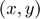
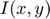
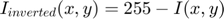

Image Inversion
This example shows how to use the V4L2 Video Capture and the SDL Video Display blocks from the Raspberry Pi® block library to implement an image inversion algorithm with a Simulink® model, and to run the model on Raspberry Pi hardware.
Contents
Introduction
Black and white image inversion refers to an image processing technique where light areas are mapped to dark, and dark areas are mapped to light. In other words, after image inversion black becomes white and white becomes black. An inverted black and white image can be thought of as a digital negative of the original image.
In this example, the inversion algorithm will be applied to the red (R), green (G) and blue (B) components of an image captured from a USB camera creating a color digital negative effect. The R, G and B components of the image are represented as uint8 values. That is, the range of the values that any of the color components can take is from 0 to 255. Assuming that the intensity value at position  of the image is , the inversion mapping is defined by .
Prerequisites
- We recommend completing Getting Started with Raspberry Pi® Hardware example.
Required Hardware
To run this example you will need the following hardware:
- Raspberry Pi hardware
- A compatible USB camera or Raspberry Pi camera module
(Optional) To display the output video on an external monitor you will need the following:
- HDMI or composite television, or a monitor with DVI or HDMI input, and appropriate cables
- USB mouse and keyboard
Task 1 - Connect Camera
In this task, you will connect a USB camera or a Raspberry Pi camera module to your Raspberry Pi hardware and check if the camera was detected properly by the Linux kernel.
1. If you have a USB camera:
- Connect the USB camera to one of the USB ports on your Raspberry Pi board. Note that some cameras may draw too much power and may require a powered USB hub for proper operation.
If you have a Raspberry Pi camera module:
- Connect the camera module to the Raspberry Pi board using a CSI cable by following the manufacturer's instructions.
- Activate the Raspberry Pi camera module V4L2 kernel driver by executing the following commands on the MATLAB prompt:
r = raspberrypi; system(r,'/sbin/modprobe bcm2835_v4l2')
2. Check if the camera is recognized by the Linux kernel by executing the following command on the MATLAB prompt:
system(r,'ls -al /dev/video*')
Typical output will be:
crw-rw---T+ 1 root video 81, 0 Dec 16 14:43 /dev/video0
Make sure that the video device file name displayed above matches to the 'Device name' parameter specified on the V4L2 Video Capture block mask. In this example, the 'Device name' should be set to '/dev/video0'.
Task 2 - Configure and Run the Image Inversion Model in External Mode
When you run the image inversion model in External mode, the image is captured from the USB camera connected to the Raspberry Pi hardware and the results of the image inversion is sent back to the host computer to be displayed by the on SDL Video Display block.
1. Open the Image Inversion model.
2. Select Tools > Run on Target Hardware > Options.... Review the parameters on the page that opens and make sure that the connection parameters for your Raspberry Pi board are correct.
3. In the model, change the Simulation mode on the toolbar to External.
4. In the model, click the Run button on the toolbar to run the model on Raspberry Pi hardware.
5. Observe the display of inverted images on the host computer.
6. While the model is running, double click on the Constant block and change the Constant value from 255 to 120, for example. Observe the resulting image effect.
7. Press the Stop button on the model to stop model execution.
Task 3 - (Optional) Configure and Run the Image Inversion Model as a Standalone Application
In this task, you will connect a monitor to Raspberry Pi hardware. The video captured from the USB camera will be inverted by the model running on Raspberry Pi hardware and displayed on the monitor connected to Raspberry Pi hardware.
1. Using appropriate cables, connect a monitor or television to the Raspberry Pi hardware. The monitor, once connected, will display the Linux desktop.
2. Connect a USB mouse and a keyboard to the Raspberry Pi hardware's USB ports. Once connected, login to Linux desktop as you would to any Linux® computer.
3. Open the Image Inversion model.
4. Select Tools > Run on Target Hardware > Options.... Review the parameters on the page that opens and make sure that the connection parameters for your Raspberry Pi board are correct.
5. In the model, click the Deploy To Hardware button on the toolbar to run the model on the Raspberry Pi hardware. On the monitor connected to Raspberry Pi hardware, you will see a window displaying inverted images.
6. Stop the model running on the Raspberry Pi hardware by executing the following on the MATLAB® command line
stopModel(r,'raspberrypi_inversion');
Other Things to Try
- Change the model to use a different constant value for each color component. Then, independently change the value of each of the constants to get a wider range of imaging effects.
Summary
This example showed a Simulink model implementing an image inversion algorithm. V4L2 Video Capture and the SDL Video Display blocks from the Raspberry Pi library were used to capture and display video data. The example showed how the model may be run in External mode, and as a standalone application on Raspberry Pi hardware.